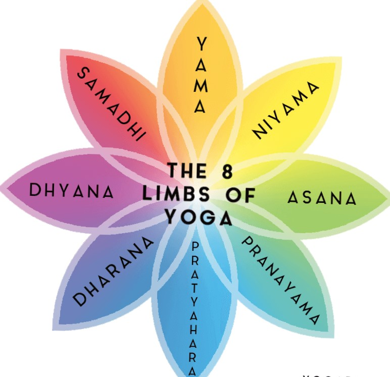
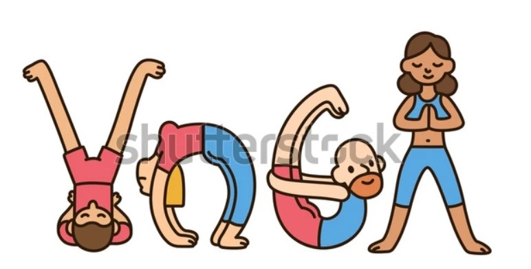

Balance in Motion

Balance in Motion
|
Yoga Surfer Balance in Motion |
|---|
Yoga is a physical, mental and spiritual practice that originated in ancient India. First codified by the sage Patanjali in his Yoga Sutras
around 400 C.E, the practice was in fact handed down from teacher to student long before this text arose. Traditionally, this was a one-to-one
transmission, but since yoga became popular in the West in the 20th century, group classes have become the norm.
The word yoga is derived from the Sanskrit root yuj, meaning “to yoke,” or “to unite”. The practice aims to create union between body, mind
and spirit, as well as between the individual self and universal consciousness. Such a union tends to neutralize ego-driven thoughts and
behaviours, creating a sense of spiritual awakening.
Yoga has been practiced for thousands of years, and whilst many different interpretations and styles have been developed, most tend to agree that
the ultimate goal of yoga is to achieve liberation from suffering. Although each school or tradition of yoga has its own emphasis and practices,
most focus on bringing together body, mind and breath as a means of altering energy or shifting consciousness.
Modern yoga is most commonly associated with the physical practice of asana, a series of postures often weaved together in styles such as Vinyasa Flow
or Ashtanga. Asana practice is generally intended to build strength and stamina, to improve flexibility, coordination and balance, and to relax the body.
However, this provides only one small aspect of the tradition of yoga as a whole.
Patanjali’s Yoga Sutras provide the traditional foundation of yoga, in which he outlines an eightfold path of the practice. Known as the ‘Eight Limbs
of Yoga,’ this path offers a guide to individuals who are dedicated to creating a union between body, mind and spirit.
Each of the Eight Limbs offers a means of living with more integrity, self-discipline, respect for nature and connection with the spiritual aspects of life.
These eight practices are intended to be carried out in a holistic and integrative manner:

1.Yamas - Five universal, ethical and moral observances to live by (nonviolence, truthfulness, non-stealing, continence and non-covetousness)
2.Niyamas - Five spiritual and self-discipline observances (cleanliness, contentment, spiritual austerities, study of scriptures and surrender to God)
3.Asana - physical posture, originally intended only for seated meditation, but more recently adapted to encompass all physical yoga practices
4.Pranayama - breathing exercises to control the flow of prana (vital life force)
5.Pratyahara - Withdrawal of the senses
6.Dharana - Single pointed concentration
7.Dhyana - Meditation
8.Samadhi - Liberation or blissful union with the Divine
The four traditional paths of yoga are:
Bhakti (devotion)
Karma (action/selfless service)
Jnana (knowledge/self-study)
Raja (self discipline/practice).
Although modern schools of yoga such as Jivamukti, Bikram and Sivananda offer alternative interpretations, most are rooted in the same philosophical concepts
and practices as Patanjali’s Eight Limbs.
Yoga is also used as a therapeutic tool for many physical and mental conditions, and mind-body research is now demonstrating its effectiveness as a
treatment for chronic pain, anxiety, depression, cardiovascular disease and diabetes, to name but a few.
THE POWER OF POSE(Benefits)

1. Yoga improves strength, balance and flexibility.
2. Yoga helps with back pain relief.
3. Yoga can ease arthritis symptoms.
4. Yoga benefits heart health.
5. Yoga relaxes you, to help you sleep better.
6. Yoga can mean more energy and brighter moods.
7. Yoga helps you manage stress.
8. Yoga connects you with a supportive community.
9. Yoga promotes better self-care.
RISKS AND SIDE EFFECTS:
Many types of yoga are relatively mild and therefore safe for people when a well-trained instructor is guiding the practice.
It is rareTrusted Source to incur a serious injury when doing yoga. The most common injuries among people practicing yoga are sprains
and strains.
However, people may wish to consider a few risk factorsTrusted Source before starting a yoga practice.
A person who is pregnant or has an ongoing medical condition, such as bone loss, glaucoma, or sciatica, should consult a healthcare
professional, if possible, before taking up yoga.
Some people may need to modify or avoid some yoga poses that could be risky given their specific condition.
Beginners should avoid advanced poses and difficult techniques, such as Headstand, Lotus Pose, and forceful breathing.
When managing a condition, people should not replace conventional medical care with yoga or postpone seeing a healthcare professional
about pain or any other medical problem.
WHO SHOULD USE CAUTION ?
Yoga is generally safe for most people. But you may need to avoid some yoga poses or modify poses if you:
Are pregnant
Have high blood pressure
Have glaucoma
Have sciatica
Make sure to tell your yoga instructor if you have any of these conditions or any other health problem or injury.
A qualified yoga teacher should be able to help you find poses that are safe for you.
HOW TO PREVENT INJURY ?
While yoga is generally safe, you can still get hurt if you do a pose incorrectly or push yourself too far. Here are some tips to stay
safe when doing yoga.
If you have a health condition, talk with your health care provider before starting yoga. Ask if there are any poses you should avoid.
Start slowly and learn the basics before pushing yourself too far.
Choose a class that is appropriate for your level. If you are not sure, ask the teacher.
Do not push yourself beyond your comfort level. If you cannot do a pose, ask your teacher to help you modify it.
Ask questions if you are not sure how to do a pose.
Bring along a water bottle and drink plenty of water. This is mostly important in hot yoga.
Wear clothing that allows you to move freely.
Listen to your body. If you feel pain or fatigue, stop and rest.